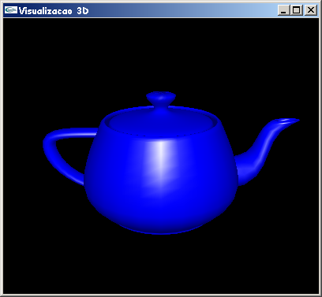

Como é possível observar na figura 14.4, a imagem gerada não possui uma qualidade satisfatória. Para adicionar um pouco de realismo nas imagens, é necessário, então, adicionar uma ou mais fontes de luz.
Inicialmente, é preciso definir o modelo de colorização que será utilizado. OpenGL fornece dois modelos: uma polígono preenchido pode ser desenhado com uma única cor (GL_FLAT), ou com uma variação de tonalidades (GL_SMOOTH, também chamado de modelo de colorização de Gouraud [Foley 1990]). A função glShadeModel() é usada para especificar a técnica de colorização desejada.
Quando objetos 3D sólidos são exibidos, é importante desenhar os objetos que estão mais próximos do observador (ou posição da câmera), eliminando objetos que ficam "escondidos", ou "parcialmente escondidos", por estes. Sendo assim,algoritmos de remoção de elementos escondidos foram desenvolvidos para determinar as linhas, arestas, superfícies ou volumes que são visíveis ou não para um observador localizado em um ponto específico no espaço. A complexidade do problema dos elementos ocultos resultou em um grande número de soluções na Computação Gráfica.
Conforme descrito por [Woo 1999], OpenGL possui um depth buffer que trabalha através da associação de uma profundidade, ou distância, do plano de visualização (geralmente o plano de corte mais próximo do observador) com cada pixel da window. Inicialmente, os valores de profundidade são especificados para serem o maior possível através do comando glClear(GL_DEPTH_BUFFER_BIT). Entretanto, habilitando o depth-buffering através dos comandos glutInitDisplayMode(GLUT_DEPTH | ...) e glEnable(GL_DEPTH_TEST), antes de cada pixel ser desenhado é feita uma comparação com o valor de profundidade já armazenado. Se o valor de profundidade for menor (está mais próximo) o pixel é desenhado e o valor de profundidade é atualizado. Caso contrário as informações do pixel são desprezadas.
Em OpenGL a cor de uma fonte de luz é caracterizada pela quantidade de vermelho (R), verde (G) e azul (B) que ela emite, e o material de uma superfície é caracterizado pela porcentagem dos componentes R, G e B que chegam e são refletidos em várias direções. No modelo de iluminação a luz em uma cena vem de várias fontes de luz que podem ser "ligadas" ou "desligadas" individualmente. A luz pode vir de uma direção ou posição (por exemplo, uma lâmpada) ou como resultado de várias reflexões (luz ambiente - não é possível determinar de onde ela vem, mas ela desaparece quando a fonte de luz é desligada).
No modelo de iluminação OpenGL a fonte de luz tem efeito somente quando existem superfícies que absorvem e refletem luz. Assume-se que cada superfície é composta de um material com várias propriedades. O material pode emitir luz, refletir parte da luz incidente em todas as direções, ou refletir uma parte da luz incidente numa única direção, tal com um espelho. Então, conforme descrito por [Woo 1999], OpenGL considera que a luz é dividida em quatro componentes independentes (que são colocadas juntas):
A cor do material de um objeto depende da porcentagem de luz vermelha, verde e azul incidente que ele reflete. Assim como as luzes, o material possui cor ambiente, difusa e especular diferentes, que determinam como será a luz refletida. Isto é combinado com as propriedades das fontes de luz, de tal maneira que a reflexão ambiente e difusa definem a cor do material. A especular é geralmente cinza ou branca.
Os componentes de cor especificados para a luz possuem um significado diferente dos componentes de cor especificados para os materiais. Para a luz, os números correspondem a uma porcentagem da intensidade total para cada cor. Se os valores R, G e B para a cor da luz são 1, a luz é branca com o maior brilho possível. Se os valores são 0.5 a cor ainda é branca, mas possui metade da intensidade, por isso parece cinza. Se R=G=1 e B=0, a luz parece amarela.
Para os materiais, os números correspondem às proporções refletidas destas cores. Se R=1, G=0.5 e B=0 para um material, este material reflete toda luz vermelha incidente, metade da luz verde e nada da luz azul. Assim, simplificadamente, a luz que chega no observador é dada por (LR.MR, LG.MG, LB.MB), onde (LR, LG, LB) são os componentes da luz e (MR, MG, MB) os componentes do material [Woo 1999].
O programa abaixo apresenta um exemplo completo da utilização de luzes em OpenGL. A imagem gerada, como mostra a figura 15.1, apenas exibe um teapot azul iluminado, numa janela com fundo preto.
// Iluminacao.c - Isabel H. Manssour
// Um programa OpenGL que exemplifica a visualização
// de objetos 3D com a inserção de uma fonte de luz.
// Este código está baseado nos exemplos disponíveis no livro
// "OpenGL SuperBible", 2nd Edition, de Richard S. e Wright Jr.
#include <gl/glut.h>
GLfloat angle, fAspect;
// Função callback chamada para fazer o desenho
void Desenha(void)
{
// Limpa a janela e o depth buffer
glClear(GL_COLOR_BUFFER_BIT | GL_DEPTH_BUFFER_BIT);
glColor3f(0.0f, 0.0f, 1.0f);
// Desenha o teapot com a cor corrente (solid)
glutSolidTeapot(50.0f);
glutSwapBuffers();
}
// Inicializa parâmetros de rendering
void Inicializa (void)
{
GLfloat luzAmbiente[4]={0.2,0.2,0.2,1.0};
GLfloat luzDifusa[4]={0.7,0.7,0.7,1.0}; // "cor"
GLfloat luzEspecular[4]={1.0, 1.0, 1.0, 1.0};// "brilho"
GLfloat posicaoLuz[4]={0.0, 50.0, 50.0, 1.0};
// Capacidade de brilho do material
GLfloat especularidade[4]={1.0,1.0,1.0,1.0};
GLint especMaterial = 60;
// Especifica que a cor de fundo da janela será preta
glClearColor(0.0f, 0.0f, 0.0f, 1.0f);
// Habilita o modelo de colorização de Gouraud
glShadeModel(GL_SMOOTH);
// Define a refletância do material
glMaterialfv(GL_FRONT,GL_SPECULAR, especularidade);
// Define a concentração do brilho
glMateriali(GL_FRONT,GL_SHININESS,especMaterial);
// Ativa o uso da luz ambiente
glLightModelfv(GL_LIGHT_MODEL_AMBIENT, luzAmbiente);
// Define os parâmetros da luz de número 0
glLightfv(GL_LIGHT0, GL_AMBIENT, luzAmbiente);
glLightfv(GL_LIGHT0, GL_DIFFUSE, luzDifusa );
glLightfv(GL_LIGHT0, GL_SPECULAR, luzEspecular );
glLightfv(GL_LIGHT0, GL_POSITION, posicaoLuz );
// Habilita a definição da cor do material a partir da cor corrente
glEnable(GL_COLOR_MATERIAL);
//Habilita o uso de iluminação
glEnable(GL_LIGHTING);
// Habilita a luz de número 0
glEnable(GL_LIGHT0);
// Habilita o depth-buffering
glEnable(GL_DEPTH_TEST);
angle=45;
}
// Função usada para especificar o volume de visualização
void EspecificaParametrosVisualizacao(void)
{
// Especifica sistema de coordenadas de projeção
glMatrixMode(GL_PROJECTION);
// Inicializa sistema de coordenadas de projeção
glLoadIdentity();
// Especifica a projeção perspectiva
gluPerspective(angle,fAspect,0.4,500);
// Especifica sistema de coordenadas do modelo
glMatrixMode(GL_MODELVIEW);
// Inicializa sistema de coordenadas do modelo
glLoadIdentity();
// Especifica posição do observador e do alvo
gluLookAt(0,80,200, 0,0,0, 0,1,0);
}
// Função callback chamada quando o tamanho da janela é alterado
void AlteraTamanhoJanela(GLsizei w, GLsizei h)
{
// Para previnir uma divisão por zero
if ( h == 0 ) h = 1;
// Especifica o tamanho da viewport
glViewport(0, 0, w, h);
// Calcula a correção de aspecto
fAspect = (GLfloat)w/(GLfloat)h;
EspecificaParametrosVisualizacao();
}
// Função callback chamada para gerenciar eventos do mouse
void GerenciaMouse(int button, int state, int x, int y)
{
if (button == GLUT_LEFT_BUTTON)
if (state == GLUT_DOWN) { // Zoom-in
if (angle >= 10) angle -= 5;
}
if (button == GLUT_RIGHT_BUTTON)
if (state == GLUT_DOWN) { // Zoom-out
if (angle <= 130) angle += 5;
}
EspecificaParametrosVisualizacao();
glutPostRedisplay();
}
// Programa Principal
int main(void)
{
glutInitDisplayMode(GLUT_DOUBLE | GLUT_RGB | GLUT_DEPTH);
glutInitWindowSize(400,350);
glutCreateWindow("Visualizacao 3D");
glutDisplayFunc(Desenha);
glutReshapeFunc(AlteraTamanhoJanela);
glutMouseFunc(GerenciaMouse);
Inicializa();
glutMainLoop();
}
Obs.: Clique aqui para fazer o download deste programa.

Figura 15.1 - Saída do programa Iluminacao.c
As funções utilizadas neste exemplo, e que não foram descritas no capítulo anterior, são apresentadas a seguir segundo [Woo 1999] e [Wright 2000].
glShadeModel(GL_SMOOTH); estabelece o modelo de colorização: GL_FLAT (a cor não varia na primitiva que é desenhada - um exemplo de primitiva é o triângulo); ou GL_SMOOTH (a cor de cada ponto da primitiva é interpolada a partir da cor calculada nos vértices). Seu protótipo é: void glShadeModel(GLenum mode);. Descrição dos parâmetros: mode especifica o modelo de colorização, sendo que o default é GL_SMOOTH [Wright 2000].
glMaterialfv(GL_FRONT,GL_SPECULAR, especularidade);
estabelece os parâmetros do material que serão usados pelo modelo de iluminação.
Possui algumas variações cujos protótipos são:
glMaterialf(GLenum face, GLenum pname, GLfloat param);
glMateriali(GLenum face, GLenum pname, GLint param);
glMaterialfv(GLenum face, GLenum pname, const GLfloat *params);
glMaterialiv(GLenum face, GLenum pname, const GLint *params);
Descrição dos parâmetros:
face determina se as propriedades do material dos polígonos que estão sendo
especificadas são front (GL_FRONT), back (GL_BACK) ou ambas (GL_FRONT_AND_BACK);
pname para as duas primeiras variações especifica o parâmetro de um único valor que
está sendo determinado (atualmente apenas GL_SHININESS possui um único valor como parâmetro);
para as duas últimas variações, que recebem um vetor como parâmetro, pode determinar as
seguintes propriedades do material: GL_AMBIENT, GL_DIFFUSE, GL_SPECULAR, GL_EMISSION,
GL_SHININESS, GL_AMBIENT_AND_DIFFUSE ou GL_COLOR_INDEXES;
param (GLfloat ou GLint) especifica o valor que será atribuído para o
parâmetro determinado por pname (neste caso, GL_SHININESS);
params (GLfloat* ou GLint*) um vetor de números reais ou inteiros que contém
as componentes da propriedade que está sendo espeficada;
Através desta função é possível determinar as propriedades de refletância do material
dos polígonos. As propriedades GL_AMBIENT, GL_DIFFUSE e GL_SPECULAR afetam a maneira na qual
as componentes de luz incidente são refletidas. GL_EMISSION é usado para materiais que possuem
"luz própria". GL_SHININESS pode variar de 0 a 128 (quanto maior o valor, maior é a área de
highlight especular na superfície). GL_COLOR_INDEXES é usado para as propriedades de
refletância do material no modo de índice de cores [Wright 2000].
glLightModelfv(GL_LIGHT_MODEL_AMBIENT, luzAmbiente);
estabelece os parâmetros do modelo de iluminação usado por OpenGL. É possível especificar
um, ou todos os três modelos:
- GL_LIGHT_MODEL_AMBIENT é usado para especificar a luz ambiente default para uma
cena, que tem um valor RGBA default de (0.2, 0.2, 0.2, 1.0);
- GL_LIGHT_MODEL_TWO_SIDE é usado para indicar se ambos os lados de um polígono são
iluminados (por default apenas o lado frontal é iluminado);
- GL_LIGHT_MODEL_LOCAL_VIEWER modifica o cálculo dos ângulos de reflexão especular;
Possui algumas variações cujos protótipos são:
glLightModelf(GLenum pname, GLfloat param);
glLightModeli(GLenum pname, GLint param);
glLightModelfv(GLenum pname, const GLfloat *params);
glLightModeliv(GLenum pname, const GLint *params);
Descrição dos parâmetros:
pname especifica um parâmetro do modelo de iluminação: GL_LIGHT_MODEL_AMBIENT,
GL_LIGHT_MODEL_LOCAL_VIEWER ou GL_LIGHT_MODEL_TWO_SIDE;
param (GLfloat ou GLint) para GL_LIGHT_MODEL_LOCAL_VIEWER um valor 0.0
indica que os ângulos da componente especular tomam a direção de visualização como sendo
paralela ao eixo z, e qualquer outro valor indica que a visualização ocorre a partir da origem
do sistema de referência da câmera; para GL_LIGHT_MODEL_TWO_SIDE um valor 0.0 indica que
somente os polígonos frontais são incluídos nos cálculos de iluminação, e qualquer outro
valor indica que todos os polígonos são incluídos nos cálculos de iluminação;
params (GLfloat* ou GLint*) para GL_LIGHT_MODEL_AMBIENT ou
GL_LIGHT_MODEL_LOCAL_VIEWER, aponta para um vetor de números inteiros ou reais;
para GL_LIGHT_MODEL_AMBIENT o conteúdo do vetor indica os valores das componentes RGBA
da luz ambiente [Wright 2000].
glLightfv(GL_LIGHT0, GL_AMBIENT, luzAmbiente);
estabelece os parâmetros da fonte de luz para uma das oito fontes de luz disponíveis. Possui
algumas variações cujos protótipos são:
glLightf(GLenum light, GLenum pname, GLfloat param);
glLighti(GLenum light, GLenum pname, GLint param);
glLightfv(GLenum light, GLenum pname, const GLfloat *params);
glLightiv(GLenum light, GLenum pname, const GLint *params);
As duas primeiras variações requerem apenas um único valor para determinar
uma das seguintes propriedades: GL_SPOT_EXPONENT, GL_SPOT_CUTOFF, GL_CONSTANT_ATTENUATION,
GL_LINEAR_ATTENUATION e GL_QUADRATIC_ATTENUATION. As duas últimas variações são usadas
para parâmetros de luz que requerem um vetor com múltiplos valores (GL_AMBIENT, GL_DIFFUSE,
GL_SPECULAR, GL_POSITION e GL_SPOT_DIRECTION).
Descrição dos parâmetros:
light especifica qual fonte de luz está sendo alterada (varia de 0 a
GL_MAX_LIGHTS); valores constantes de luz são enumerados de GL_LIGHT0 a GL_LIGHT7
pname especifica qual parâmetro de luz está sendo determinado pela
chamada desta função (GL_AMBIENT, GL_DIFFUSE, GL_SPECULAR, GL_POSITION, GL_SPOT_DIRECTION,
GL_SPOT_EXPONENT, GL_SPOT_CUTOFF. GL_CONSTANT_ATTENUATION, GL_LINEAR_ATTENUATION,
GL_QUADRATIC_ATTENUATION);
param (GLfloat ou GLint) para parâmetros que são especificados por um
único valor (param); estes parâmetros, válidos somente para spotlights, são
GL_SPOT_EXPONENT, GL_SPOT_CUTOFF, GL_CONSTANT_ATTENUATION, GL_LINEAR_ATTENUATION e
GL_QUADRATIC_ATTENUATION.
params (GLfloat* ou GLint*) um vetor de valores que descrevem os
parâmetros que estão sendo especificados [Wright 2000].
glEnable(GL_COLOR_MATERIAL); conforme já explicado no capítulo 6, a função glEnable é usada para habilitar uma variável de estado OpenGL. Neste caso, estão sendo habilitadas: GL_COLOR_MATERIAL (atribui a cor para o material a partir da cor corrente), GL_DEPTH_TEST (controla as comparações de profundidade e atualiza o depth buffer), GL_LIGHTING (habilita a iluminação) e GL_LIGHT0 (habilita a luz de número 0) [Woo 1999].
glutSwapBuffers(); e glutInitDisplayMode(GLUT_DOUBLE...); já explicadas anteriormente, são usadas para evitar que a imagem fique "piscando" a cada interação (por exemplo, quando se faz zoom-in e zoom-out).
Também é possível eliminar
o "brilho" do objeto, como se o material fosse opaco. Neste caso, basta eliminar a componente
especular removendo as seguintes linhas do código fonte:
GLfloat especularidade[4]={1.0,1.0,1.0,1.0};
GLint especMaterial = 60;
glMaterialfv(GL_FRONT,GL_SPECULAR, especularidade);
glMateriali(GL_FRONT,GL_SHININESS,especMaterial);
glLightfv(GL_LIGHT0, GL_SPECULAR, luzEspecular );